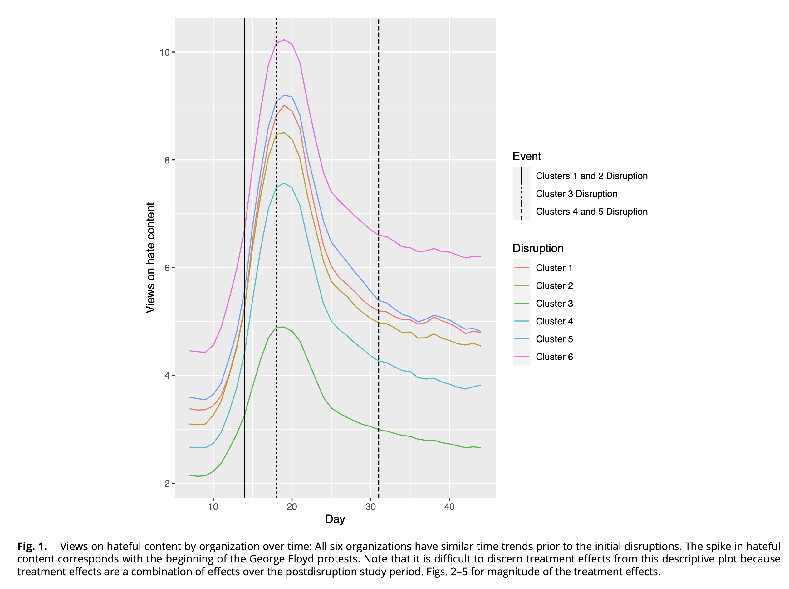
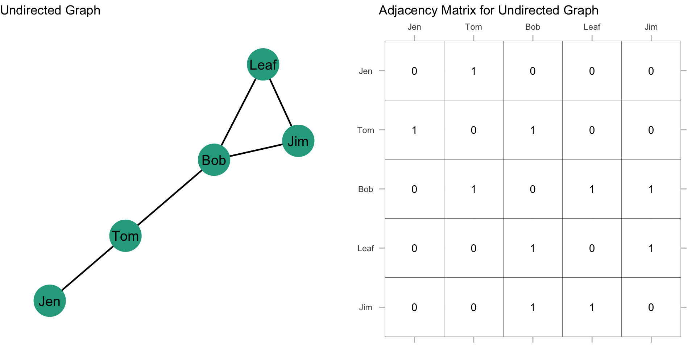
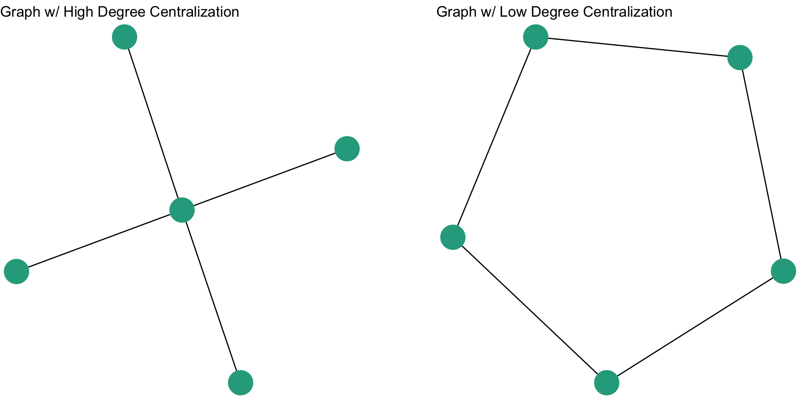
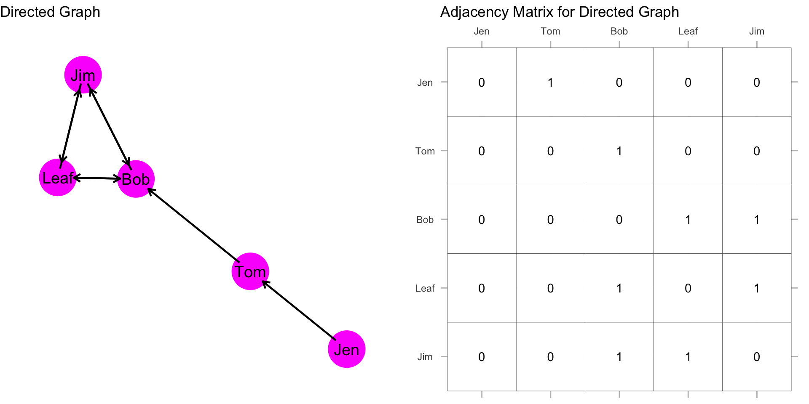

Degree Centrality
When we say a node is “central”, what do we mean conceptually? As a crime analyst, you probably already know that identifying and understanding who holds the most influence within a group is crucial for effective intervention. For example, in a study of white-collar crime networks, Smith (2012) identified individuals most connected to others in a corporate fraud scheme, revealing key facilitators who had a disproportionate influence over the flow of information and resources. This allowed the researchers to pinpoint the central figures within the fraud ring, enabling targeted investigative efforts. This chapter will guide you through the conceptualization of centrality as it pertains to degree centrality, demonstrating how to calculate degree centrality scores for individual nodes and how to assess the overall degree centralization of an entire network. By gaining a conceptual understanding of centrality, and understanding the operationalization of centrality through degree centrality, crime analysts can more effectively identify key targets for investigation and disruption in criminal organizations.
By the end of this chapter, you should be able to:
- Explain the conceptualization of “centrality” as it pertains to degree centrality.
- Calculate degree centrality scores for a set of nodes.
- Calculate a degree centralization score for a graph.
Case Study: Disrupting Hate Speech Online
As has been noted by many concerned citizens and scholars, hate speech in online forums has become a salient issue. If you are an organization who hosts such sites, what can you do to reduce hate speech? One approach is to “deplatform” particular individuals. This approach is a type of strategic network disruption whereby select individuals are removed from the network with the goal of reducing hate speech among those who are still using the platform. The logic is that these individuals are critical links that connect others and their absence will reduce hateful content. Does it work?
This is the question that Thomas and Wahedi (2023) sought to address when they identified hate organizations on Facebook and evaluated whether removing central individuals reduced hate speech in those organizations.
Yes! As shown in the figure above (by the way, this is Figure 1 from the article), the authors found that hate speech declined in the organizations after the intervention. The overall finding is that deplatforming can be effective at reducing online hate speech. For our purposes here, it illustrates the role that centrality plays in thinking about networks. The authors examined a situation where central actors were removed as an intervention.
Now, let’s start from the beginning and really be precise with our thinking about centrality.
Concepts and Operationalization
When we say a node is “central”, what do we mean conceptually? If your thinking what I’m thinking, it probably has something to to with a node being important. When we talk about centrality, then we are talking about the importance of a node.
Speaking generally, network position should be interesting and important:
- As a description of the position of a node
- And as a description of an entire network
We will review centrality for individual nodes as well as how centrality can be used to describe an entire network (hint: we call it centralization).
Conceptualization
“Everyone agrees, it seems, that centrality is an important structural attribute of networks. All concede that it is related to a high degree to other important group properties and processes. But there consensus ends.” (Freeman (1978/1979): 217)
The type of measure we use depends on the substantive question of interest. Various measures of centrality are correlated, but they operationalize different concepts. Put differently, there is not a single measure of centrality because what we mean by “centrality” can differ.
Here are three typical ways of thinking about centrality:
- Degree
- Betweenness
- Closeness
In this and subsequent chapters, we will discuss each of these concepts, how they are conceptualized and how they are operationalized in social network analysis.
It is also important to distinguish between whether we are talking about the centrality of a node or the centrality of a graph:
The centrality of a node (whether it is measured as degree centrality, betweenness centrality, or closeness centrality) refers to point centrality. In other words, the centrality of a particular node in a graph. When we talk about point centrality, we are usually comparing different nodes. For example, is Jim more central than Joan?
In addition, we can also describe the centrality of an entire graph, referred to as graph centrality. The centrality measure on an entire graph tells us how centrality measures differ between nodes in a graph. As we will see, we can describe how hierarchical or decentralized a graph is based on the centralization of the graph.
As with prior chapters, we will start with undirected graphs and then move to directed graphs.
Undirected Graphs
Degree Centrality
In an undirected binary graph, degree centrality measures the extent to which a node connects to all other nodes in a network. In other words, the number of edges incident with a node. This is symbolized as: \(d(n_i)\) and this reads “degree for the \(i_{th}\) node”. For an undirected binary graph, the degree, \(d(n_i)\), is simply the row or column sum. We can express this formally as:
\(C_D(n_i) = \sum_j x_{ij} = \sum_j x_{ji}\)
Which reads: the degree centrality of node i is the sum over the other nodes in the graph (i.e. \(\sum_j x_{ij} = \sum_j x_{ji}\)). If i is connected to j, recall that there would be a 1 in the \(X_{ij}\) cell, where \(X\) is the sociomatrix. If i is not connected to j, then there would be a 0 in the \(X_{ij}\) cell. The equation is just telling us to sum all of the entries.
Let’s take a look at this with some data. Recall our example network with Jen, Tom, Bob, Leaf, and Jim. Let’s find the degree centrality score for each node.

Recall from above that in an undirected network the degree centrality score is either the sum of the row or the sum of the column. Let’s calculate the score for Jen. If we look across the row (that is, horizontally) we see that the cell values are: 0, 1, 0, 0, 0. If we add these we get 1. That is, Jen’s degree centrality score is 1. If we look across the column, we get the same information: 0, 1, 0, 0, 0. Put another way: \(C_D(Jen) = \sum_j x_{ij} = x_{Jen, Tom} + x_{Jen, Bob} + x_{Jen, Leaf} + x_{Jen, Jim} = 1 + 0 + 0 + 0 = 1\).
Jen’s degree centrality score is 1, meaning that she has 1 tie. Notice in the calculation that we didn’t include \(x_{ii}\) which is \(x_{Jen, Jen}\) because this is zero. Be careful when you do the calculations that you don’t confuse these. Since self-nominations are usually set to zero, this is not a problem when we use the row or column totals. Just something to keep in mind.
What about the rest of the nodes? Let’s do the calculations:
- Tom = \(C_D(Tom) = \sum_j x_{ij} = x_{Tom, Jen} + x_{Tom, Bob} + x_{Tom, Leaf} + x_{Tom, Jim} = 1 + 1 + 0 + 0 = 2\)
- Bob = \(C_D(Bob) = \sum_j x_{ij} = x_{Bob, Jen} + x_{Bob, Tom} + x_{Bob, Leaf} + x_{Bob, Jim} = 0 + 1 + 1 + 1 = 3\)
- Leaf = \(C_D(Leaf) = \sum_j x_{ij} = x_{Leaf, Jen} + x_{Leaf, Tom} + x_{Leaf, Bob} + x_{Leaf, Jim} = 0 + 0 + 1 + 1 = 2\)
- Jim = \(C_D(Jim) = \sum_j x_{ij} = x_{Jim, Jen} + x_{Jim, Tom} + x_{Jim, Bob} + x_{Jim, Jim} = 0 + 0 + 1 + 1 = 2\)
Standardization
Actor degree centrality not only reflects each node’s connectivity to other nodes but also depends on the size of the network, g. Larger networks will have a higher maximum possible degree centrality value. This is called a raw score. How can we use nodes from different sized networks?
Standardize! If we want to compare nodes in different sized networks, then we just take into account the number of nodes and the maximum possible nodes to which i could be connected. In an undirected graph, this is g-1.
Thus, we can calculate a standardized degree centrality for an undirected graph as:
\[C'_D(n_i) = \dfrac{C_D(n_i)}{g-1} = \dfrac{\sum\limits_{j} x_{ij}}{g-1}\]
What this gives us the proportion of the network members with ties to actor i. A convenient feature of standardizing in this way is that it means the index varies between 0 (no connections; isolate) to 1 (ties to every actor). Again, let’s take a look at our example network:

For this graph, the denominator, g-1 is \(5 - 1 = 4\). Plugging that in we get: \(C'_D(n_i) = \dfrac{C_D(n_i)}{4}\).
And recall our raw scores:
- Jen = 1
- Tom = 2
- Bob = 3
- Leaf = 2
- Jim = 2
So, we just adjust the raw scores by standardizing by the denominator:
- Jen = \(C'_D(Jen) = \dfrac{C_D(1)}{4} = 0.25\)
- Tom = \(C'_D(Tom) = \dfrac{C_D(2)}{4} = 0.50\)
- Bob = \(C'_D(Bob) = \dfrac{C_D(3)}{4} = 0.75\)
- Leaf = \(C'_D(Leaf) = \dfrac{C_D(2)}{4} = 0.50\)
- Jim = \(C'_D(Jim) = \dfrac{C_D(2)}{4} = 0.50\)
How is this to be interpreted? The standardized degree centrality score gives us the proportion of the network members with ties to actor i. So, a score of 0.25 for Jen means that Jen has ties to 25% of the nodes that she could potentially have ties to in the network. In other words, of the four people she could have ties with, she only has ties with one node.
Mean Degree
We can examine the summary statistics for degree centrality by inspecting the mean. The average degree is an important property of a network. Why? What does a network with a high average degree look like? A low average degree?
The mean degree for an undirected network is:
\[\bar C_D = \dfrac{\sum\limits_{i=1}^g C_D(n_i)}{g} = \dfrac{2L}{g}\]
This may look a bit overwhelming, but we can break it into pieces:
\(\dfrac{\sum\limits_{i=1}^g C_D(n_i)}{g}\) just says to sum up the degrees for each node and then divide by the number of nodes, g.
\(\dfrac{2L}{g}\) shows that the equation above reduces to a simple calculation, the number of edges in the graph, L, multiplied by 2 and then divided by the number of nodes, g.
What is the mean degree for our example network? Well, we have \(L=5\) and \(g = 5\), so plugging the numbers we get:
\[\bar C_D = \dfrac{\sum\limits_{i=1}^g C_D(n_i)}{g} = \dfrac{2L}{g} = \dfrac{2*5}{5} = \dfrac{10}{5} = 2\] The average degree for this graph is 2. In other words, on average, a node has two edges.
Degree Centralization
In addition to summarizing the graph with the mean degree, we can also calculate the centralization of the graph. Centralization measures the extent to which the nodes in a social network differ from one another in their individual centrality scores. Put differently, how much variation is there in the distribution of centrality scores?
We can calculate this as:
\[C_A = \dfrac{\sum\limits_{i=1}^g [C_A(n^*) - C_A(n_i)]}{max \sum\limits_{i=1}^g [C_A(n^*) - C_A(n_i)]}\]
Again, this may look imposing, but we can decompose it to see what it is doing:
- \(C_A(n^*)\) is the largest degree centrality scored observed in the graph
- \(C_A(n_i)\) is the degree centrality score for node i
- \(\sum\limits_{i=1}^g [C_A(n^*) - C_A(n_i)]\) simply takes the sum of deviations for each node from the largest value
- Finally, we take that sum and divide it by \(max \sum\limits_{i=1}^g [C_A(n^*) - C_A(n_i)]\), which is the theoretical maximum sum possible of differences
This should look familiar, recall from your introductory statistics course that the standard deviation of a variable, y is:
\[SD_y = \sqrt{\frac{\sum{(y_i - \mu)}^2}{N}}\]
That is, the sum of squared deviations of \(y_i\) from the population mean, \(mu\), divided by N, the size of the population. We are doing something similar with the centralization score. It is the sum of observed differences divided by the theoretical maximum sum possible of differences.
For degree centrality, the maximum possible sum of differences is calculated as \((g-1)(g-2)\). Which makes the equation:
\[C_D = \dfrac{\sum\limits_{i=1}^g [C_D(n^*) - C_D(n_i)]}{[(g-1)(g-2)]}\]
If I lost you in some of the math, don’t worry. Let’s calculate the degree centralization score for our example graph:
And recall our raw scores:
- Jen = 1
- Tom = 2
- Bob = 3
- Leaf = 2
- Jim = 2
Bob has the largest degree at 3. This means that \(C_D(n^*) = 3\). Finally, recall that \(g = 5\) since we have 5 nodes.
Now, all we have to do is plug in the values:
\[C_D = \dfrac{\sum\limits_{i=1}^g [C_D(n^*) - C_D(n_i)]}{[(g-1)(g-2)]} = \dfrac{(3-1)+(3-2)+(3-3)+(3-2)+(3-2)}{(5-1)(5-2)} = \dfrac{2+1+0+1+1}{4*3}= \dfrac{5}{12}= 0.417\]
So, the degree centralization score for our example graph is 0.417. What does this mean?
When degree centrality is evenly dispersed, meaning that all nodes have the same degree, then the numerator in the equation will be zero and the quotient will be close to 0. When there is considerable inequality in the degree centrality scores between nodes, the quotient will be closer to 1. Thus, closer to 1 indicates that the graph is hierarchically structured and closer to 0 means that the graph is more decentralized.
We can see this by examining two additional undirected networks:

The degree centralization score for the figure on the left is 1.0. We can see this by doing the calculations:
\[C_D = \dfrac{\sum\limits_{i=1}^g [C_D(n^*) - C_D(n_i)]}{[(g-1)(g-2)]} = \dfrac{(4-4)+(4-1)+(4-1)+(4-1)+(4-1)}{(5-1)(5-2)} = \dfrac{0+3+3+3+3}{4*3}= \dfrac{12}{12}= 1.0\]
The degree centralization score for the figure on the right is 0. We can see this by doing the calculations:
\[C_D = \dfrac{\sum\limits_{i=1}^g [C_D(n^*) - C_D(n_i)]}{[(g-1)(g-2)]} = \dfrac{(2-2)+(2-2)+(2-2)+(2-2)+(2-2)}{(5-1)(5-2)} = \dfrac{0+0+0+0+0}{4*3}= \dfrac{0}{12}= 0.0\]
Directed Graphs
Degree Centrality
In a directed binary graph, degree centrality can be broken down into indegree and outdegree centrality:
- Indegree, \(C_I(n_i)\), measures the number of ties that i receives. For the sociomatrix \(X_{ij}\), the indegree for i is the column sum:
\[C_I(n_i) = \sum_j x_{ji}\]
- Outdegree, \(C_O(n_i)\), measures the number of ties that i sends. For the sociomatrix \(X_{ij}\), the outdegree for i is the row sum:
\[C_O(n_i) = \sum_j x_{ij}\]
What are the indegree and outdegree centrality scores in the following graph?:

Indegree
Let’s start with the indegree. As stated above, indegree, \(CI(n_i)\), measures the number of ties that i receives. For the sociomatrix \(X_{ij}\), the indegree for i is the column sum: \(C_I(n_i) = \sum_j x_{ji}\). So, to get the indegree for each node, we just sum over the columns. Recall that columns are vertical.
Let’s calculate the indegree for Jen: \(C_I(Jen) = \sum_j x_{j,Jen} = x_{Tom,Jen} + x_{Bob,Jen} + x_{Leaf,Jen} + x_{Jim,Jen} = 0+0+0+0 = 0\)
Jen’s indegree is 0 because she doesn’t receive any ties from other nodes. Let’s calculate the indegree for the rest of the nodes:
- \(C_I(Tom) = \sum_j x_{j,Tom} = x_{Jen,Tom} + x_{Bob,Tom} + x_{Leaf,Tom} + x_{Jim,Tom} = 1+0+0+0 = 1\)
- \(C_I(Bob) = \sum_j x_{j,Bob} = x_{Jen,Bob} + x_{Tom,Bob} + x_{Leaf,Bob} + x_{Jim,Bob} = 0+1+1+1 = 3\)
- \(C_I(Leaf) = \sum_j x_{j,Leaf} = x_{Jen,Leaf} + x_{Tom,Leaf} + x_{Bob,Leaf} + x_{Jim,Leaf} = 0+0+1+1 = 2\)
- \(C_I(Jim) = \sum_j x_{j,Jim} = x_{Jen,Jim} + x_{Tom,Jim} + x_{Bob,Jim} + x_{Leaf,Jim} = 0+0+1+1 = 2\)
Outdegree
Let’s now look at the outdegree. With indegree, we are looking at the ties coming into a node. But, with outdegree we are doing the opposite, looking at the ties that are coming from the node. As stated above, Outdegree, \(CO(n_i)\), measures the number of ties that i sends. For the sociomatrix \(X_{ij}\), the outdegree for i is the row sum \(C_O(n_i) = \sum_j x_{ij}\). So, to get the outdegree for each node, we just sum over the rows. Recall that rows are horizontal.
Let’s calculate the outdegree for Jen: \(C_O(Jen) = \sum_j x_{Jen,j} = x_{Jen,Tom} + x_{Jen,Bob} + x_{Jen,Leaf} + x_{Jen,Jim} = 1+0+0+0 = 1\)
Let’s calculate the outdegree for the rest of the nodes:
- \(C_O(Tom) = \sum_j x_{Tom,j} = x_{Tom,Jen} + x_{Tom,Bob} + x_{Tom,Leaf} + x_{Tom,Jim} = 0+1+0+0 = 1\)
- \(C_O(Bob) = \sum_j x_{Bob,j} = x_{Bob,Jen} + x_{Bob,Tom} + x_{Bob,Leaf} + x_{Bob,Jim} = 0+0+1+1 = 2\)
- \(C_O(Leaf) = \sum_j x_{Leaf,j} = x_{Leaf,Jen} + x_{Leaf,Tom} + x_{Leaf,Bob} + x_{Leaf,Jim} = 0+0+1+1 = 2\)
- \(C_O(Jim) = \sum_j x_{Jim,j} = x_{Jim,Jen} + x_{Jim,Tom} + x_{Jim,Bob} + x_{Jim,leaf} = 0+0+1+1 = 2\)
Now, let’s compare the indegree and outdegree:
| Node | Indegree | Outdegree |
|---|---|---|
| Jen | 0 | 1 |
| Tom | 1 | 1 |
| Bob | 3 | 2 |
| Leaf | 2 | 2 |
| Jim | 2 | 2 |
| —– | ——– | ——— |
| Total | 8 | 8 |
Note that both the indegree and outdegree total to the same amount. This makes sense because there are \(L=8\) edges in the graph.
Standardization
Recall that indegree/outdegree centrality not only reflects each node’s connectivity to other nodes but also depends on the size of the graph, g. Larger networks will have a higher maximum possible degree centrality value. We can standardize, or normalize, the same way by dividing by g-1.
For our example graph, \(g-1 = 4\) and that our raw scores:
Indegree
- Jen = 0
- Tom = 1
- Bob = 3
- Leaf = 2
- Jim = 2
Outdegree
- Jen = 1
- Tom = 1
- Bob = 2
- Leaf = 2
- Jim = 2
We just adjust the raw indegree scores by standardizing by the denominator:
- Jen = \(C'_I(Jen) = \dfrac{0}{4} = 0.00\)
- Tom = \(C'_I(Tom) = \dfrac{1}{4} = 0.25\)
- Bob = \(C'_I(Bob) = \dfrac{3}{4} = 0.75\)
- Leaf = \(C'_I(Leaf) = \dfrac{2}{4} = 0.50\)
- Jim = \(C'_I(Jim) = \dfrac{2}{4} = 0.50\)
How is this to be interpreted? The standardized indegree centrality score gives us is the proportion of the network members for whom node i has received a tie. A score of 0.25 for Tom means that Tom received ties from 25% of the nodes that he could potentially have received ties from in the network.
For the raw outdegreee scores we do the same:
- Jen = \(C'_O(Jen) = \dfrac{1}{4} = 0.25\)
- Tom = \(C'_O(Tom) = \dfrac{1}{4} = 0.25\)
- Bob = \(C'_O(Bob) = \dfrac{2}{4} = 0.50\)
- Leaf = \(C'_O(Leaf) = \dfrac{2}{4} = 0.50\)
- Jim = \(C'_O(Jim) = \dfrac{2}{4} = 0.50\)
How is this to be interpreted? The standardized outdegree centrality score gives us is the proportion of the network members for whom node i has sent a tie. A score of 0.25 for Tom means that Tom sends ties to 25% of the nodes that he could potentially have sent ties to in the network.
Mean Degree
As before, we can examine the summary statistics for indegree/outdegree centrality by inspecting the mean:
\[\bar d = \dfrac{\sum\limits_{i=1}^g C_I(n_i)}{g} = \dfrac{\sum\limits_{i=1}^g C_O(n_i)}{g} = \dfrac{L}{g}\] We just take the number of edges in the graph, \(L\), and divide it by the number of nodes in the graph, \(g\).
As it turns out, the mean indegree and mean outdegree are equal. This is because we are counting up, for the numerator, the number of edges.
What is the mean indegree/outdegree for this graph?

\[\bar d = \dfrac{C_I(n_i)}{g} = \dfrac{C_O(n_i)}{g} = \dfrac{L}{g} = \dfrac{8}{5} = 1.6\]
This means that, on average, a node sends 1.6 ties and receives 1.6 ties.
Degree Centralization
As with the undirected graph, we can also calculate how centralized the edges are in the graph. Recall that degree centralization measures the extent to which the nodes in a graph differ from one another in their individual degree centrality scores. For a directed graph, the difference is that the denominator is \((g-1)^2\) or \((g-1)(g-1)\). The difference is due to the directional nature of the graph. So, this gives us the following equation for either the indegree centralization score or the outdegree centralization score:
\[C_D = \dfrac{\sum\limits_{i=1}^g [C_D(n^*) - C_D(n_i)]}{[(g-1)^2]}\]
Indegree Centralization
Let’s calculate the indegree centralization score for our example graph. Recall our raw indegree scores:
- Jen = 0
- Tom = 1
- Bob = 3
- Leaf = 2
- Jim = 2
Bob has the largest degree at 3. This means that \(C_D(n^*) = 3\). Finally, recall that \(g = 5\) since we have 5 nodes.
Now, all we have to do is plug in the values:
\[C_I = \dfrac{\sum\limits_{i=1}^g [C_I(n^*) - C_I(n_i)]}{[(g-1)(g-1)]} = \dfrac{(3-0)+(3-1)+(3-3)+(3-2)+(3-2)}{(5-1)(5-1)} = \dfrac{3+2+0+1+1}{4*4}= \dfrac{7}{16}= 0.438\]
The indegree centralization score for our example graph is 0.438. What does this mean?
Recall that when degree centrality is evenly dispersed, meaning that all nodes have the same degree, then the numerator in the equation will be zero and the quotient will be close to 0. When there is considerable inequality in the degree centrality scores between nodes, the quotient will be closer to 1. Thus, closer to 1 indicates that the graph is hierarchically structured and closer to 0 means that the graph is more decentralized.
When we introduce directionality, we have to alter our language a bit. When indegree centrality is evenly dispersed, meaning that all nodes receive the same number of ties, then the numerator in the equation will be zero and the quotient will be close to 0. Thus, closer to 1 indicates that the indegrees in the graph are hierarchically structured and closer to 0 means that the indegrees for the graph are more decentralized.
Outdegree Centralization
Now, let’s calculate the outdegree centralization score for our example graph. Recall our raw outdegree scores:
- Jen = 1
- Tom = 1
- Bob = 2
- Leaf = 2
- Jim = 2
Bob, Leaf, and Jim all have the largest degree at 2. This means that \(C_D(n^*) = 2\). Finally, recall that \(g = 5\) since we have 5 nodes.
Now, all we have to do is plug in the values:
\[C_O = \dfrac{\sum\limits_{i=1}^g [C_O(n^*) - C_O(n_i)]}{[(g-1)(g-1)]} = \dfrac{(2-1)+(2-1)+(2-2)+(2-2)+(2-2)}{(5-1)(5-1)} = \dfrac{1+1+0+0+0}{4*4}= \dfrac{2}{16}= 0.125\]
The outdegree centralization score for our example graph is 0.125. What does this mean?
An outdegree centralization score close to 1 indicates that the outdegrees in the graph are hierarchically structured and closer to 0 means that the outdegrees for the graph are more decentralized.
Comparing Indegree and Outdegree Centralization
The indegree centralization score, \(C_I\), is 0.438 and the outdegree centralization score, \(C_O\), is 0.125. What does the difference tell us? It tells us that the outdegrees are more decentralized than the indegrees. Put another way, the indegrees are more centralized than are the outdegrees. Make sense? Think of it this way: there is more inequality in the way the indegrees are distributed than the way the outdegrees are distributed.
Test your Knowledge
- What does it mean for a node to be “central” in a network? Provide an example where centrality may play a critical role in a criminal investigation.
- How is degree centrality calculated in an undirected binary graph? How does this differ for a directed graph?
- Why is it important to standardize degree centrality, and how is this done?
- Explain what the mean degree tells us about a network. How is it calculated for an undirected graph? For a directed graph?
- How is degree centralization different from degree centrality? What does a degree centralization score closer to 1 indicate about the structure of a network?
- Suppose the outdegree centralization score is higher than the indegree centralization score in a graph. What does this tell us about the structure of the network?
Summary
In this chapter, we explored the concept of centrality, focusing specifically on degree centrality and its critical role in understanding network structures. We learned that degree centrality measures the number of direct connections a node has within a network, providing insights into which individuals or entities hold the most influence. Through examples like white-collar crime networks and online hate speech deplatforming, we saw how identifying central actors can inform targeted interventions. We also discussed the importance of standardizing degree centrality to compare nodes across different network sizes and examined how centralization reflects the overall structure and hierarchy of a network. Understanding both node-level and graph-level centrality allows crime analysts to more effectively analyze social networks, identify key players, and develop strategies for effective interventions. By mastering these concepts, crime analysts can apply degree centrality to real-world problems, enhancing their investigative capabilities. In the next chapter we will focus on a different conceptualization and operationalization of centrality: closeness.